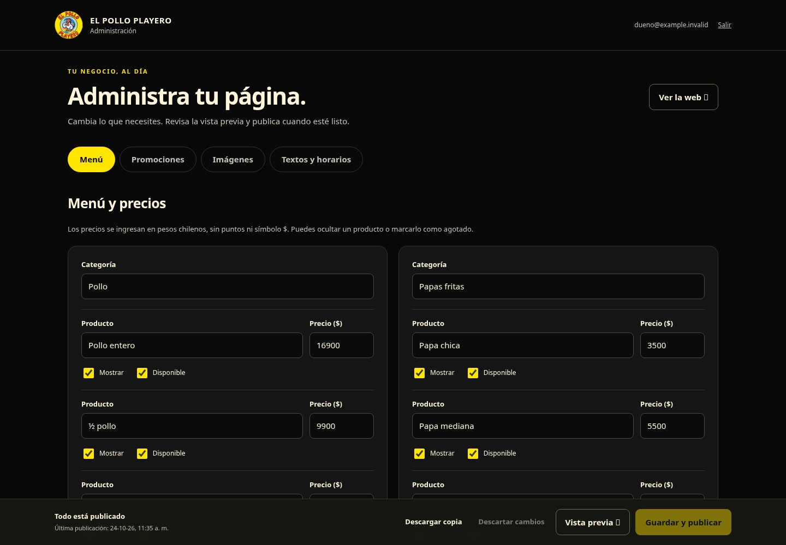

Tu panel de administración
Preparado para editar menú, precios, promociones, imágenes, textos y horarios desde el celular o computador. Incluye vista previa, productos agotados y descarga de una copia del contenido.
¿Ya tienes el panel funcionando? Actualiza aquí para añadir compras mixtas, costos, cuentas y tarjetas. Para una instalación nueva, completa los pasos de almacenamiento y acceso privado que aparecen a continuación.
Así se ve el panel

1. Crea el almacenamiento
- En Cloudflare, abre Storage & databases / Almacenamiento y bases de datos → D1.
- Pulsa Create database / Crear base de datos.
- Usa el nombre
playero-admin. Las tablas y el contenido inicial se crean automáticamente al conectar el servicio.
2. Publica el servicio del panel
Descargar el archivo del servicio · Abrir código para copiar
- Ve a Compute → Workers & Pages → Create application.
- Crea un Worker, con el ejemplo inicial si lo solicita. Ponle
playero-gestion. - Abre Edit code / Editar código. Reemplaza todo el archivo principal por el contenido descargado y pulsa Deploy / Publicar.
- En Bindings / Enlaces, agrega una base de datos D1: nombre del enlace
DB, base de datosplayero-admin. - En Settings → Domains & Routes → Add → Custom domain, agrega
gestion.elpolloplayero.cl. Cloudflare configurará el DNS y HTTPS de este subdominio.
3. Configura el acceso del dueño
- Abre Zero Trust → Access → Applications. Si es la primera vez, configura un equipo y elige el plan gratuito que corresponda a tu cuenta.
- Agrega una aplicación Self-hosted / Autohospedada, llamada
Administración Playero. - Protege el dominio
gestion.elpolloplayero.cl, rutaadmin. La protección debe incluir/adminy todas sus subrutas, como/admin/api/content. - Crea una política Allow / Permitir → Include / Incluir → Emails / Correos y añade únicamente el correo autorizado del dueño.
- En métodos de acceso, habilita One-time PIN para recibir un código por correo.
- Copia el Application Audience (AUD) de esta aplicación y el dominio de tu equipo, que termina en
.cloudflareaccess.com.
4. Añade la configuración privada del Worker
Vuelve a playero-gestion → Settings → Variables and Secrets. Los correos se guardan aquí, sin publicarlos en el código.
| Nombre | Valor |
|---|---|
SITE_ORIGIN | https://elpolloplayero.cl |
ADMIN_EMAILS | Correo autorizado del dueño. Si hay varios, sepáralos con comas. Puedes guardarlo como secreto. |
ACCESS_TEAM_DOMAIN | El dominio real de tu equipo: tu-equipo.cloudflareaccess.com. |
ACCESS_AUD | El AUD de la aplicación creada en el paso anterior. |
Guarda y publica los cambios del Worker. El panel verifica la firma de la sesión y el correo autorizado antes de permitir cualquier edición.
5. Entra y comprueba
- Abre gestion.elpolloplayero.cl/admin/. Debe solicitar el código de acceso por correo.
- Comprueba que ves los precios actuales, modifica un campo y usa Vista previa. La vista previa no publica cambios.
- Pulsa Guardar y publicar. Abre elpolloplayero.cl y recarga para comprobar el resultado.
- El acceso también queda disponible desde elpolloplayero.cl/admin/.
Uso cotidiano
- Usa Mostrar para ocultar temporalmente un producto y Disponible para marcarlo agotado.
- Las imágenes se convierten a WebP conservando la transparencia. La biblioteca admite hasta 300 imágenes.
- Los afiches pueden tener precios impresos dentro de la foto. Cuando cambies esos precios, reemplaza también el afiche correspondiente.
- Descartar cambios recupera la última versión publicada. Descargar copia guarda un respaldo JSON.
El Worker y D1 usan sus propias cuotas de Cloudflare. Este panel no requiere R2 ni procesa pagos de clientes. La activación real se confirma al completar la prueba de acceso, publicación y visita a la web.